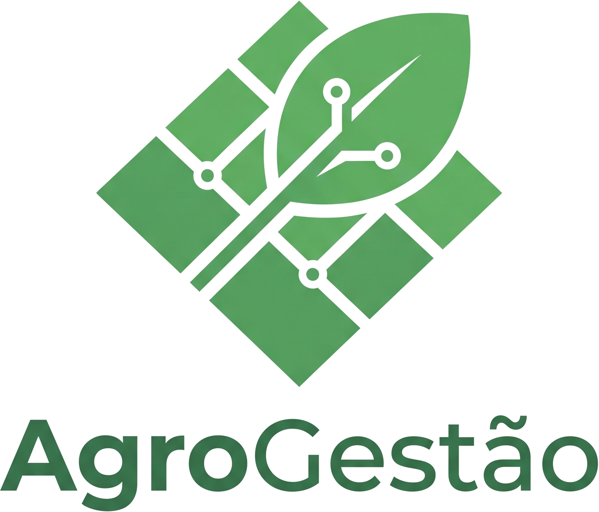

01
Informação dispersa
Dados operacionais, produtivos e financeiros espalhados em fontes diferentes.

Plataforma integrada de gestão agrícola
Centralize propriedades, talhões, safras, atividades, insumos, ocorrências e custos — conectando essas informações para facilitar o acompanhamento da operação e a tomada de decisões.
O cenário hoje
Cadernos, planilhas, WhatsApp e anotações soltas — sem uma visão única da operação rural.
Dores do produtor
Dados operacionais, produtivos e financeiros espalhados em fontes diferentes.
Dificuldade de saber o que já foi feito e o que ainda está pendente.
Insumos sem rastreio confiável de entradas, saídas e saldo disponível.
Sem histórico integrado de talhões, ocorrências e custos para embasar decisões.
Validação da ideia
Em pesquisa com 81 gestores de agricultura familiar em Manaus/AM, nenhum utilizava sistema integrado — a operação depende de anotações informais, cadernos ou planilhas isoladas.
Matos, Carneiro & Simas · RECODAF, 2024
Nossa proposta
Solução proposta
Uma plataforma única para propriedade, talhões, safras, atividades, estoque, ocorrências e custos.
Uma ação na propriedade reflete automaticamente em estoque, custos, histórico e dashboard.
Validação da ideia
A proposta se apoia em evidências do setor e na lógica natural da operação agrícola.
Pequenos e médios produtores ainda dependem de métodos manuais — cadernos, planilhas e mensagens.
Informações da operação naturalmente se relacionam: talhão, atividade, insumo e custo caminham juntos.
Ferramentas isoladas geram retrabalho e dificultam manter um histórico confiável da propriedade.
A integração entre módulos é o gap que cadastros soltos não resolvem — e é o coração do AgroGestão.
Transparência: ainda não há produto testado com usuários — esta é a validação conceitual da ideia.
O que o AgroGestão fará
“Como está minha propriedade hoje?” — visão central de operação, estoque e ocorrências.
Organização da produção por área, cultura e ciclo produtivo.
Planejar, executar e registrar plantio, adubação, pulverização, colheita e mais.
Entradas, saídas e alertas quando insumos estiverem baixos ou críticos.
Pragas, clima, equipamentos — com acompanhamento e linha do tempo.
Visão gerencial: onde estou gastando? Sem substituir um sistema contábil.
Por que somos diferentes
O AgroGestão não é “mais um app para cadastrar fazendas”. Representa a operação real da propriedade.
Da atividade realizada à visão completa da propriedade.
Oportunidade
No Brasil, pequenos e médios produtores ainda operam com ferramentas manuais e sem visão integrada.
Software agrícola cresce, mas ERPs corporativos não atendem quem usa caderno e planilha no dia a dia.
Pequenos e médios produtores rurais — fora do escopo inicial: grandes corporações, contabilidade fiscal e IoT.
Nota: números de mercado formais serão refinados na fase de validação com usuários reais, após o MVP.
Escopo do MVP
Objetivo: entregar valor integrado no prazo — não resolver todo o agronegócio de uma vez.
Plano de execução
Escopo, arquitetura, design system e módulos base (auth, dashboard, talhões).
Atividades, insumos, ocorrências e custos — com integração entre módulos.
MVP funcional + documentação + apresentação PI IV.
Backend persistente, testes com produtores e iteração contínua.
Protótipo navegável para sessões guiadas com produtores.
Testar fluxo ponta a ponta: cadastrar → executar atividade → ver reflexo no dashboard.
Coletar feedback qualitativo e priorizar melhorias com base no uso real.
Ainda não há produto nem validação com usuários — este é o plano para quando o MVP existir.
Equipe · Engenharia de Software
Da atividade realizada à visão completa da propriedade.